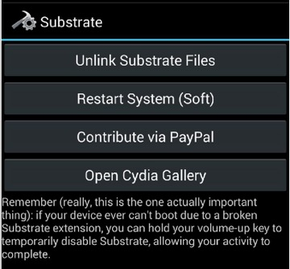

主页
1.1.
前言
1.2.
概览
1.3.
逆向核心思路
1.4.
hook插件与开发
1.4.1.
XPosed
1.4.2.
Cydia Substrate
1.4.2.1.
Android-OpenDebug
1.4.2.2.
Introspy-Android
1.5.
其他心得
1.5.1.
adb
1.5.2.
文件管理
1.5.2.1.
文件管理器
1.5.3.
相关资料
1.5.3.1.
Android API Level
1.6.
子教程
1.7.
附录
1.7.1.
参考资料
本书使用 HonKit 发布
Cydia Substrate
Cydia Substrate
主页
Cydia Substrate
下载
com.saurik.substrate.apk
功能
和
Xposed
类似的框架，用来安装各种插件，实现各种功能。
比如可以：
安装绕过
ssl
检测的插件，用来破解
ssl pinning
关于安卓的app中的https：
app内部启用了：
SSL Pinning
=
ssl certificate pinning
=
certificate pinning
=
ssl证书绑定
=证书绑定`
此处也可以用来安装相关插件，导出安卓的dex文件
特点
Hook底层方法非常方便
对so中的方法hook操作非常便捷
截图

results matching "
"
No results matching "
"